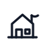
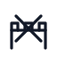
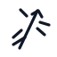

SVGs originais, genéricos e abstratos para usar em hexmap.
Pontos de interesse
1 — Torre pequenatorre_pequena2 — Fortificaçãofortificacao3-4 — Marco naturalmarco_natural5 — Templotemplo6 — Colinas tumularescolinas_tumulares7-8 — Vilarejovilarejo9-10 — Cidade pequenacidade_pequena11 — Cidade grande/metrópolecidade_grande_metropole12 — Ravinaravina13-14 — Ninho de um monstroninho_monstro

15 — Refúgio de um eremitarefugio_eremita16-17 — Formação de cavernaformacao_caverna18 — Dólmens antigosdolmens_antigos19 — Acampamento bárbaroacampamento_barbaro20 — Santuário sagradosantuario_sagrado
Desenvolvimentos
1 — Desastre! Role na tabela Cataclismadesenvolvimento_cataclismo2 — Sobre/conectado a uma grande tumbadesenvolvimento_tumba3-4 — Sendo atacado por um invasordesenvolvimento_invasor5 — Lar de um oráculodesenvolvimento_oraculo6 — Próximo/sobre um dragão adormecidodesenvolvimento_dragao_adormecido7-8 — Abandonado e em ruínasdesenvolvimento_ruinas9-10 — Protegido por seus moradores atuaisdesenvolvimento_protegido

11 — Sob o cerco de um grupo de guerreirosdesenvolvimento_cerco12 — Lar de um culto religiosodesenvolvimento_culto13-14 — Onde um círculo secreto de magos se reúnedesenvolvimento_magos15 — Ocupado por um autonomeado rei/rainhadesenvolvimento_rei_rainha

16-17 — Controlado por um feiticeiro maléficodesenvolvimento_feiticeiro18 — Protegido por um guardião anciãodesenvolvimento_guardiao19 — Esconde um grande tesourodesenvolvimento_tesouro20 — Com um portal para outro planodesenvolvimento_portal